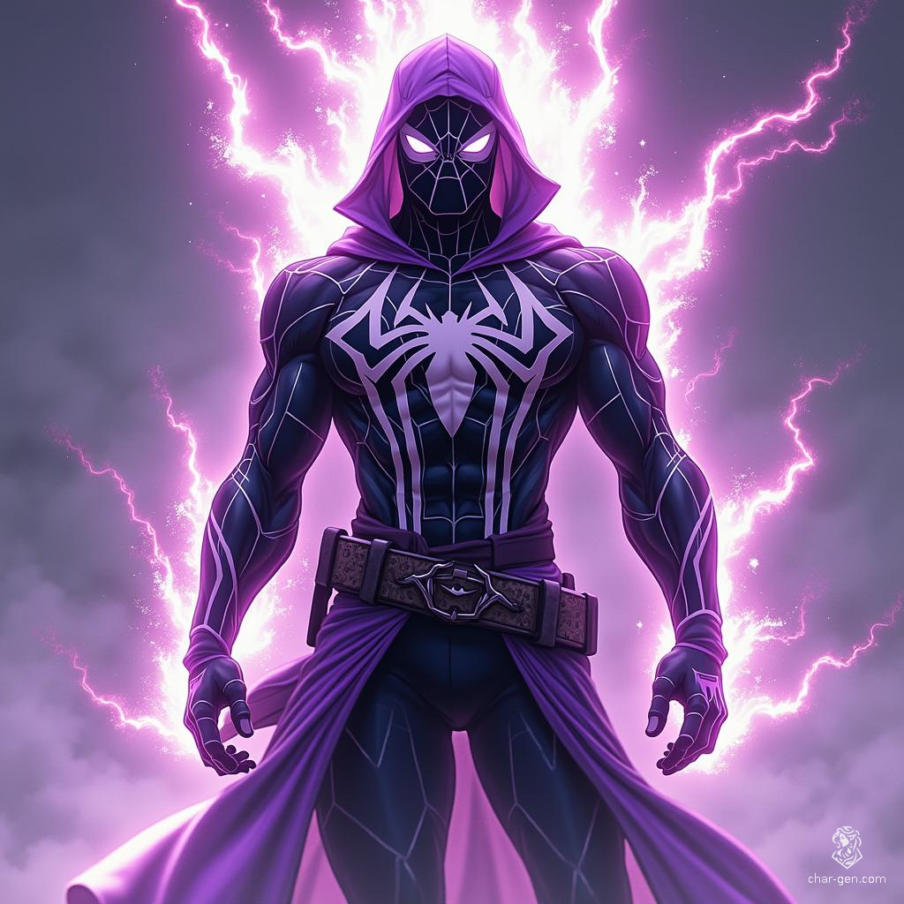

Storm Weaver: The Rise of Boston's Scientific Guardian

A Brilliant Beginning In the heart of Berlin, Germany, a child prodigy was born. Simon Weiss came into the world as the son of two esteemed physicists, Dr. Hans Weiss and Dr. Elsa Weiss, both renowned for their groundbreaking work in renewable energy. From his earliest days, Simon was immersed in a world of scientific wonder and discovery.
The Weiss household was unlike any other. Dinner conversations revolved around quantum mechanics and atmospheric phenomena. Bedtime stories were tales of great scientific discoveries and the visionaries behind them. For young Simon, the laws of physics were as familiar as nursery rhymes.
As Simon grew, so did his insatiable curiosity about the world around him. He was particularly fascinated by the raw power of nature -- the howling winds of a storm, the crackling energy of lightning, the relentless force of ocean waves. Where others saw chaos, Simon saw potential.
The American Dream Simon's exceptional aptitude for science did not go unnoticed. As he approached the end of his secondary education, universities from around the world clamored to recruit the young German prodigy. However, one offer stood out above the rest -- a full scholarship to the prestigious Massachusetts Institute of Technology (MIT) in Boston.
For Simon, this was a dream come true. MIT represented the pinnacle of scientific research and innovation, especially in the fields that fascinated him most. With a mixture of excitement and trepidation, he bid farewell to his parents and his homeland, embarking on a journey that would change his life forever.
The Atmospheric Energy Converter As a doctoral candidate, Simon became the lead researcher on the Atmospheric Energy Converter (AEC) project. The AEC was an ambitious endeavor designed to capture and convert the energy produced by storms into a reliable source of clean power. If successful, it promised to revolutionize the field of renewable energy and solve many of the world's pressing energy crises.
The project was as challenging as it was exciting. Simon and his team worked tirelessly, pushing the boundaries of known science. They developed new theories, created cutting-edge technologies, and overcame countless obstacles. With each breakthrough, they edged closer to their goal.
The Perfect Storm The night that changed Simon's life forever began like any other. A massive storm system was forecasted to pass over Boston -- a perfect opportunity to test the AEC's capabilities. Eager to validate his theories, Simon decided to run an unscheduled live trial.
Unknown to Simon and his team, a genetically modified spider from a nearby lab had made its way into the AEC's core chamber. As the storm reached its peak and Simon activated the device, a massive lightning strike caused a catastrophic overload. The convergence of the AEC's experimental technology, the genetically altered spider, and the raw power of the lightning transformed Simon forever.
Awakening When Simon regained consciousness days later, he discovered he had developed extraordinary abilities. He could manipulate energy, possessed spider-like powers including wall-crawling and web-shooting, and had enhanced physical capabilities. The accident had transformed him into something beyond human.
As he grappled with his new reality, Simon faced a crucial decision: try to return to his normal life or use his newfound powers to make a difference. After much soul-searching, he chose to become a hero, determined to prevent disasters like the one that changed him and continue his mission of creating a better world.
Becoming Storm Weaver Simon approached his transformation with scientific precision, meticulously documenting and testing his abilities. He created a sophisticated suit incorporating energy-regulating circuits and advanced sensors, allowing him to better control his powers. The design, featuring patterns of lightning and spider webs, reflected his unique origin.
Boston's New Guardian Storm Weaver made his debut during a crisis at a power station, using his combination of scientific knowledge and superpowers to prevent disaster. He quickly established himself as a protector of Boston, focusing particularly on technological threats and energy-related crimes.
The Man Behind the Mask While Storm Weaver protects Boston, Simon Weiss continues his scientific work at MIT, striving to perfect the AEC technology in a safer way. He carefully maintains his dual identities, using his experiences as a hero to inform his research and vice versa.
Growing Pains Despite his growing mastery over his powers, Simon faces constant challenges in balancing his dual lives. He trains rigorously to maintain control over his abilities while mentoring young scientists, hoping to inspire responsible innovation and prevent accidents like the one that transformed him.
A Hero Emerges As Storm Weaver's reputation grows, Simon remains committed to using both science and superpowers to protect his adopted home. Though he operates independently, his actions have begun to draw attention from the broader superhero community. For now, he continues his solitary mission, weaving together the threads of science and heroism into a tapestry of hope for the future.